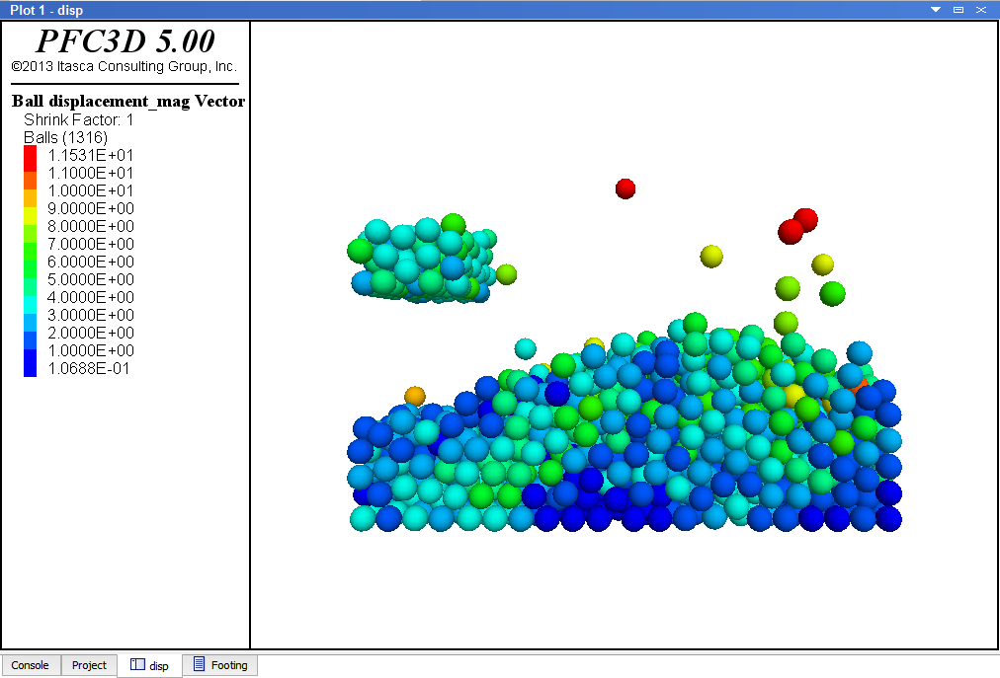

绘图窗格


图 1：一个 绘图 窗格。单击可在单独窗口中放大。
绘图窗格提供了可视化模型的功能。在该窗格中，所有视图操作（旋转、缩放、平移等）始终可通过鼠标右键使用，而与当前选定的工具无关（该工具决定 左 键可以做什么）。视图操作可用的鼠标/键盘命令完整列表请参见 视图操作参考（View Manipulation Reference）。工具从 工具栏（the toolbar） 中选择。常用的工具栏命令也可从右键上下文菜单中获得，如下所述。
视图窗格中的上下文（右键）菜单
视图窗格的上下文（右键）弹出菜单如下所示。“隐藏分组”和“仅显示分组”命令仅在鼠标处于“选择”模式时可用。菜单中的所有其他命令始终可用，无论当前处于哪种鼠标模式。

| 隐藏分组 - 如果鼠标位于绘图中可检测到的某个分组之上，则该命令将隐藏该分组。 |
| 仅显示分组 - 如果鼠标位于绘图中可检测到的某个分组之上，则该命令将隐藏除该分组之外的所有分组。 |
| 绘图 ► - 此弹出菜单包含以下命令，这些命令也可在工具栏上使用：“新建绘图”、“重新生成绘图”、“保存绘图”、“复制绘图”、“打印绘图”和“重命名绘图”。 |
| 导出 ► - 此弹出菜单包含以下命令，这些命令也可通过工具栏上的“导出”命令使用：“位图…”、“数据文件…”、“DXF…”、“VMRL…”、“PostScript…”、“SVG…”和“Excel…”。“Excel”命令仅在包含 历史、剖面 或 数据表 绘图项的绘图中才可用。 |
| 绘图控制帮助 - 从该 帮助 文件中打开“快速参考（Quick Reference）”主题页，其中提供视图操作（缩放、平移、旋转等）可用的鼠标 + 键盘命令完整列表。 |
| 视图模式 ► - 此弹出菜单包含用于在鼠标模式之间切换的命令：“操作”、“查询”、“居中”、“测量距离”和“定义平面”。 |
| 拾取 - 全局（对所有绘图）打开/关闭拾取。 |
| 草图模式 - 全局（对所有绘图）打开/关闭草图模式。 |
| 系统信息 - 打开一个对话框，提供有关计算机 OpenGL 实现及其总内存/可用内存的信息。 |
键盘命令
| 按键 | 命令 | 说明/注释 |
|---|---|---|
Ctrl+O |
打开到项目… | 打开一个项目项并将其添加到项目。 |
Ctrl+Shift+N |
添加新绘图… | 打开一个项目项并将其添加到项目。 |
Ctrl+Shift+S |
保存所有项目项… | 保存所有项目项；对于尚未保存过的项目项，将提供一个用于命名/定位的对话框。 |
Ctrl+Alt+S |
[绘图名称] ▸ 另存为… | 将活动窗格中的项目项保存为绘图文件。 |
Ctrl+W |
[绘图名称] ▸ 关闭 | 关闭活动窗格中的绘图。 |
Ctrl+P |
[绘图名称] ▸ 打印 | 打印活动窗格中的绘图。 |
上述命令文本与该命令在 i 文件（File） 菜单上显示的文本一致。
绘图窗格中的 控制面板
当 绘图窗格处于活动状态时，控制面板 中提供以下控件组
使用工具栏上的 显示/隐藏控件组 按钮（）来访问这些控件组。
| 这些内容对您有帮助吗？… 版权与免责声明 |
FLAC3D © 2019, Itasca | 原文更新于 2020 年 10 月 8 日 |